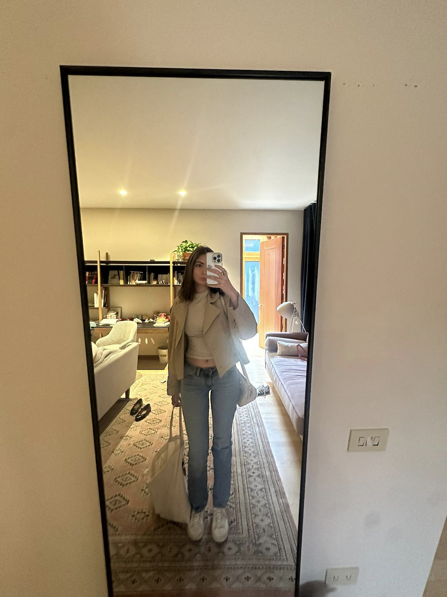

July 2025
Now, a year since Pride by Kendrick Lamar played, we've shared countless moments, thousands of messages, endless calls, dozens of flights, and infinite love. Isa, you are the love of my life. I love you with all my heart, now and forever.
